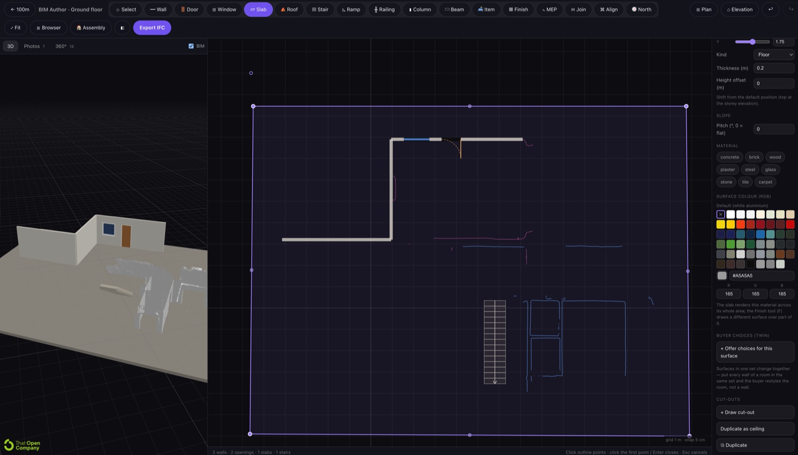
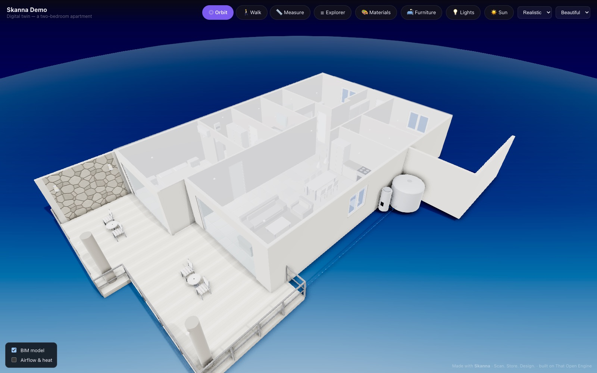

Every building should have a digital twin. Start yours today.
Scan it with an iPhone, trace the floor plan you already have, upload a 3D model from any other tool, or draw it from scratch. Out come dimensioned drawing sets, an interactive twin anyone can open on a link, and data on every object — from one file that can't disagree with itself, and that stays with the building for as long as it stands.
A live link, not a mock-up — the finished building opens in your browser, no account. The modelling tool needs nothing but a browser, and it's opening to accounts shortly. The iPhone scanner is coming to the App Store for anyone who wants to capture their own.
How it works
Five stages, once per building. Click any stage to open it — and in stage two, click the way in that matches what you already have.
Any building, at any point in its life
It does not matter whether the building is a hundred years old, half-built, or a concept nobody has poured concrete for yet. The twin is not a project deliverable — it is the building's record, and it can be started at any stage.
- Existing — nobody has a current, correct set of information about it. Capture it once and stop re-surveying it every time something needs doing.
- Under construction — the model tracks what is actually being built, not what was drawn. What comes out at the end is a real as-built.
- Concept — draw it before it exists, sell from it, get the permit drawings out of it, and keep the same file all the way through construction.
Six ways in — all of them end at the same model
Only one of them needs a scanner. Everything after this stage happens in a browser tab, and you can mix them freely: scan the ground floor, trace the architect's DXF for the first, draw the loft from a tape measure. One model either way.
LiDAR scan. Walk the building with an iPhone or iPad Pro and come out with measured geometry, photos and 360° panoramas, all positioned in space. One visit, everything collected at once.
One place where it all comes together
BIM Author is a browser tool. Whatever you brought in stage two goes underneath as a reference, and you draw the real building on top of it: walls, openings, slabs, roofs, stairs, railings, columns, beams, services and finishes — each object carrying its real specification, floor by floor.
You are never locked to one source. Trace the scan where you have one, switch to the architect's DXF for the floor you don't, and measure the rest by hand. Nothing is invented: every dimension comes off a real measurement. What comes out is a proper IFC model, not a picture of one.
This is where the value actually arrives
Once the model exists, the work you used to commission separately becomes an output of it — generated in minutes, from a single file that cannot contradict itself.
- Drawings — plans, elevations and sections on your own title block, with dimensions and schedules. PDF, SVG or DXF. A revision is a re-issue, not a redraw.
- Visualisation — the render is the model. No separate pipeline, no render budget per campaign.
- Calculation — areas, quantities and schedules come out of the same objects you drew.
- Planning and design — test a renovation, an extension or a repurposing against geometry that is actually correct.
- Sharing — publish it to a link anyone opens in a browser, with no app and no account.
The twin doesn't expire when the project does
A drawing set is finished the day it is issued and starts going stale the day after. A twin is the opposite: it is the same file for the life of the building, and every change updates the record instead of starting a new one.
- Adjust measurements when something is rebuilt, rerouted or replaced
- Log purchases, invoices, warranties and manuals against the object they belong to
- Keep service history, condition and inspections on the equipment itself
- Hand the twin over with the property when it sells — the next owner inherits twenty years of accurate information instead of a tape measure
The long version — why buildings lose their information in the first place, and everything a finished model produces — is on a page of its own.
Who this is for
Everybody gets the same platform — the whole of it. Scanning, browser modelling, drawing sets, the published twin, the property portal and the operations side are one product, not tiers sold to different trades. The only difference between the rows below is which part you reach for first.
The Skanna app
Built for one job: capturing the inside of buildings. It is the measuring tool already in your iPhone Pro or iPad Pro, taken seriously — we do not guess at the geometry and we do not invent the images. It is a raw capture tool, not a beautifier: what you walk out with is what was actually there, true to scale, ready to model from. Everything is captured, processed and stored on the device. Free, no account, and completely private.
Requires a LiDAR sensor: iPhone 12 Pro or later Pro model, or iPad Pro 2020 or later. No Pro iPhone? Nothing else on this page needs one — see the six ways in. Privacy policy.
BIM Author
The modelling tool, entirely in the browser. Trace a scan, a splat, a CAD file or an old floor plan — or draw from nothing — and build a real IFC building model floor by floor, with every wall, opening, fixture and service run carrying its real specification. No CAD seat, no plug-ins, no workstation. Most people are productive in it in a day.

Everything comes back out in open formats — IFC for the model, GLB for the geometry, DXF, SVG and PDF for the drawings. Take them to SketchUp, Revit, Blender or any other platform, or keep working here. Nothing is trapped.
What the model gives you
Publish the finished model to a link. Anyone you send it to opens a fully rendered building in their browser — no software, no account, no download — and everything below is already in it.

Sun study
Real solar geometry on the site's own coordinates. Move the time and the date, and the shadows follow.
2D drawings, in vector
Plans, elevations and sections on your title block. PDF, SVG and DXF at any standard scale.
Lighting
Every fixture is a real emitter, on its own switch, from warm white to daylight.
Walk and orbit
Drop into first person at eye height, or stay above it and turn it in your hand.
Measure anything
Two points, a real dimension — off the same geometry the drawings come from.
Click for the data
Every object carries its type, storey, dimensions and whatever the author attached: manufacturer, capacity, service dates, the manual.
Building services
Ventilation, electrical, water, drainage, gas and data as real objects. X-ray the structure to see all of it at once.
Materials the viewer picks
Offer a curated set of finishes and let the buyer restyle a room. Your published model is never touched.
Furniture and equipment
A catalogue of real products at real dimensions, placed by the viewer and cleared with one button.
Pins
A photo of how it was actually wired, a 360° panorama of the room as built, a note for whoever comes next — pinned to the surface it describes.
Property portal
Every building on its own permanent page: models, drawings, documents, media and a dated log of everything ever added.
Operations
Inventory, condition, service history and renovation progress recorded on the objects themselves.
Pricing & where we stand
The app is free — capture, measure and export, nothing held back and nothing to buy. You pay only when the platform starts doing real work for you, and it costs a fraction of a traditional CAD seat. The comparison below is about scope, not quality — every tool in it is good at the part it was built for. The difference is that you need all of those parts to keep a building documented, and buying them separately is where the money and the contradictions go.
| Capability | Skanna | Reality-capture platforms | Desktop CAD / BIM suites | 3D hosting & viewers |
|---|---|---|---|---|
| Capture the real building | ✓Free LiDAR app, or bring photos, a splat or a scan | ✓Their own camera or phone app | ✗Separate hardware and software | ✗Not a capture tool |
| Author a structured BIM model | ✓In the browser, floor by floor | ~Usually a paid drafting service | ✓The thing they are built for | ✗ |
| Permit-grade 2D drawings | ✓Generated on your title block, PDF · SVG · DXF | ~Ordered as a deliverable | ✓Drawn and maintained by hand | ✗ |
| Photoreal visuals | ✓The render is the model — no separate pipeline | ~The capture is the visual | ~Extra tools, extra licences, extra time | ~Whatever you upload |
| Shareable on a plain link | ✓No app, no account, no download | ✓ | ~Usually a viewer plus accounts | ✓ |
| Sun study, lighting, services | ✓In the shared twin, for the viewer | ✗ | ✓For the author, on the desktop | ~Lighting only |
| Data on every object | ✓Specification, quantities, schedules, service history | ~Tags and annotations | ✓ | ~Annotations |
| Open formats out | ✓IFC · GLB · DXF · SVG · PDF, always | ~Often tier-gated | ✓IFC and DWG | ✓glTF |
| Lives with the building afterwards | ✓Updated for life, handed on when it sells | ~A dated capture of one day | ~A project file that closes | ✗A published asset |
| What it runs on | ✓Any browser. Nothing to install | ✓Browser, plus capture hardware | ✗Workstation, per-seat licence | ✓Browser |
| What it costs | ✓App free. Platform is a low monthly subscription; a yearly licence covers delivering it to clients | Per-space subscription, plus hardware, plus per-deliverable fees | Per-seat licences, typically thousands per year, each | Free to modest — hosting only |
Compared by capability, from public product information and our own use, correct to the best of our knowledge in September 2026. Categories rather than logos, because each of them contains several products that differ. If you think a row is unfair to a tool you use, tell me and I will correct it. Final Skanna pricing is announced at launch; the app stays free either way.
Why it is priced like this
This platform was built by one person, from a single idea: the building industry throws away an enormous amount of material, money and work every day for one stupid reason — nobody knows exactly what is already there. Wrong measurements, stale drawings, surveys paid for twice, material ordered and scrapped. That waste is measured in tonnes, daily, worldwide.
Making money was never the point. It costs money to build this and to keep it running, so it is priced to survive — not to extract. Everything is in open formats and everything is shareable, because a record of a building that you cannot take with you is not a record, it is a hostage.
My personal promise: if this succeeds — if it grows into something that genuinely covers what existing and future buildings need — it becomes free for humanity. Not a free tier. Free.
— Anders Olofsson, founder
Who is behind it
Fully independent. No investors, no acquirer, no roadmap set by anyone else. The platform is in beta with a small team of professionals with a combined 100+ years in CAD and in reality capture — people who build both in the real world and digitally, and who tell me when something is wrong.
The crash course — starts 1 November
The whole chain, end to end: walk into a building with a phone, walk out with drawings, a digital twin, and a client who pays for it. Scanning technique, working from drawings you already have, the browser modelling tool, getting drawing sets out, publishing the twin, and how to sell the service. No other platform covers all of this in one place — which is exactly why it can be taught in days instead of years.
Course material is being produced now. Leave your email and you get the syllabus, the start date and the enrolment link first, before it opens generally.
Join the crash-course list
Tell me what you do today and I will tell you honestly whether this is worth your time and money before you spend either.
Requirements
To model, publish and deliver — a browser. That is the whole list. Scanning with your own phone is optional and needs a LiDAR sensor: iPhone 12 Pro or later Pro model, or iPad Pro 2020 or later, on iOS 16+.
Support & contact
Questions, feedback, or need help? Email anders@skanna.site and you'll get a reply from me directly.
Get access
This is in production, not in beta.
Every part of the chain on this page exists and is being used: the scanner, the browser BIM tool, the drawing generator and the published twin are producing the permit drawings, the models, the buyer walkthroughs and the operations system for a live 100-unit development right now.
Access is opening in stages, so the people already doing this work get in first.
Join the interest list
For anyone who owns, captures, draws or delivers property work today — owners, surveyors, designers, architects, contractors, agents, developers, fit-out and renovation teams. You don't need to be in the trade, and you don't need a scanner.
No account, no card. You'll hear back from me directly with your access window and a date.
Talk partnerships
For manufacturers, suppliers and anyone who wants to build something on top of this — a catalogue inside the model, a market of your own, a white-labelled tool. Bring the idea and we'll talk it through.
This one goes straight to me.